Realista, old School o Tradicional, Neotradicional, Blackwork,
Dotwork, Japonés, Tribal o Borneo, Acuarela.
Nos especializamos en todo tipo de tatuajes, tenemos propuestas
para cada estilo. ¡Tráenos tu diseño o te lo diseñamos a tu
medida y gustos, contamos con los mejores artistas para hacerlo!
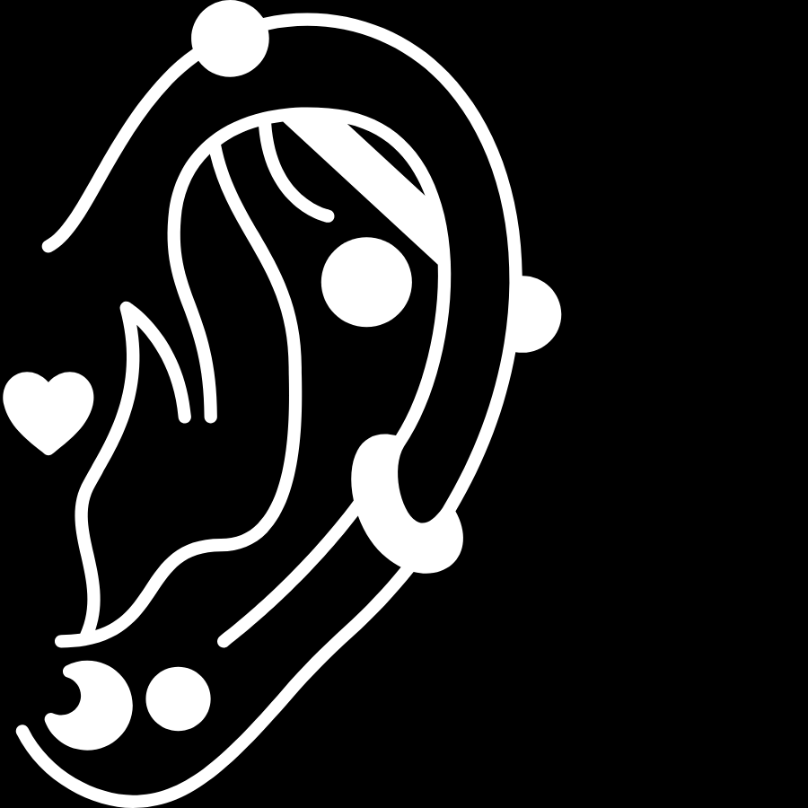
Piercing
Para colocar el perforado, primero se marca con un bolígrafo especial, el lugar a perforar, luego se pasa
a perforar con la aguja. Según el lugar, el proceso puede variar.
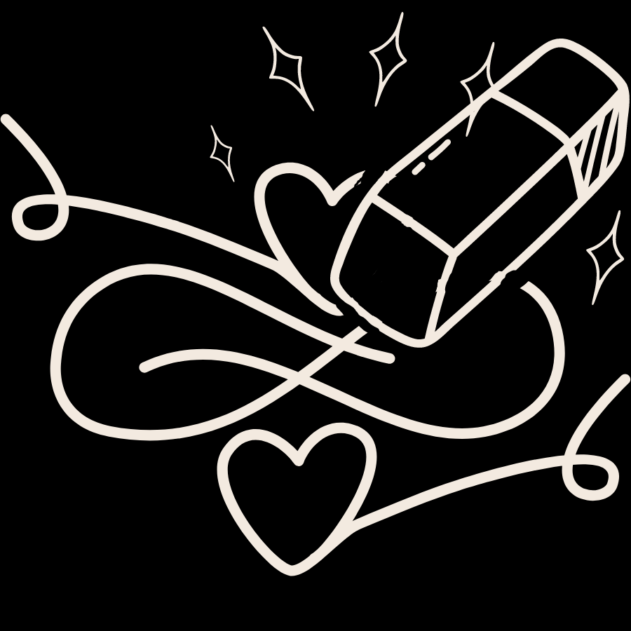
Borrado de tatuajes con laser
La tarea del láser es micropulverizar esas partículas de tinta. Al ser más pequeñas, pueden ser
eliminadas por los macrófagos, unos glóbulos blancos que -además de destruir microorganismos presentes en
la sangre- extraen las células muertas. Es decir, “limpian” el organismo.
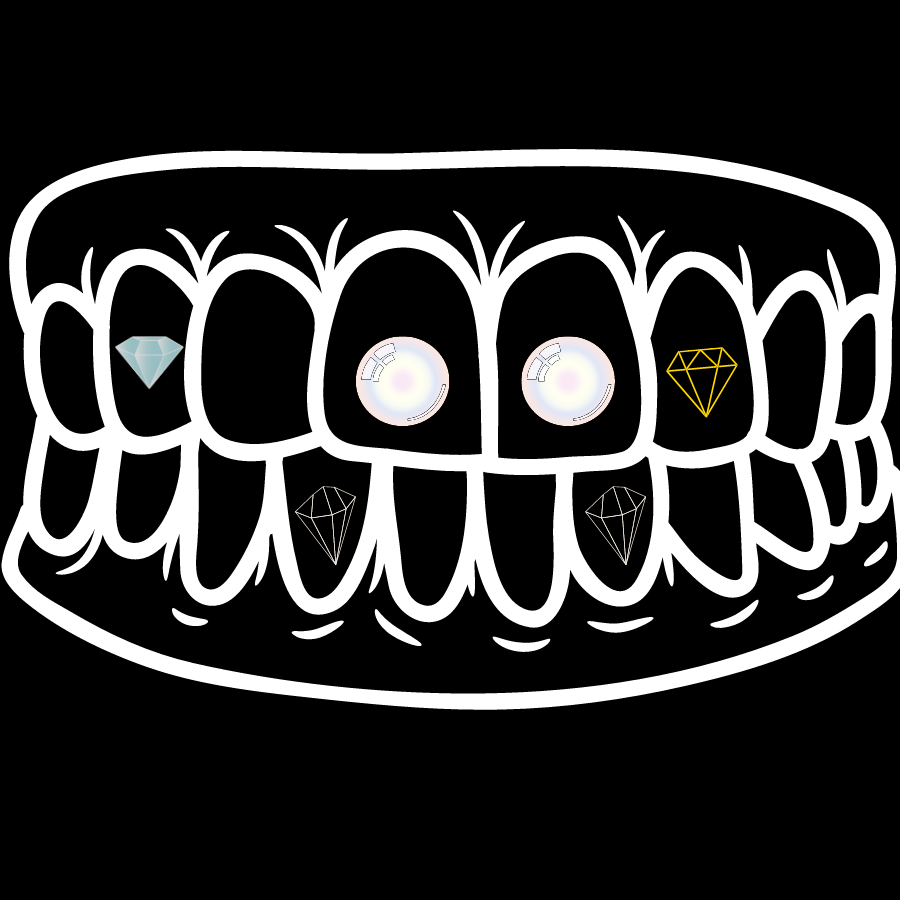
jewelry
Las gemas dentales son incrustaciones de joyas de diamantes de imitación que se adhiere a la superficie
del diente por medio de un adhesivo.
ALGUNOS DE NUESTROS TRABAJOS
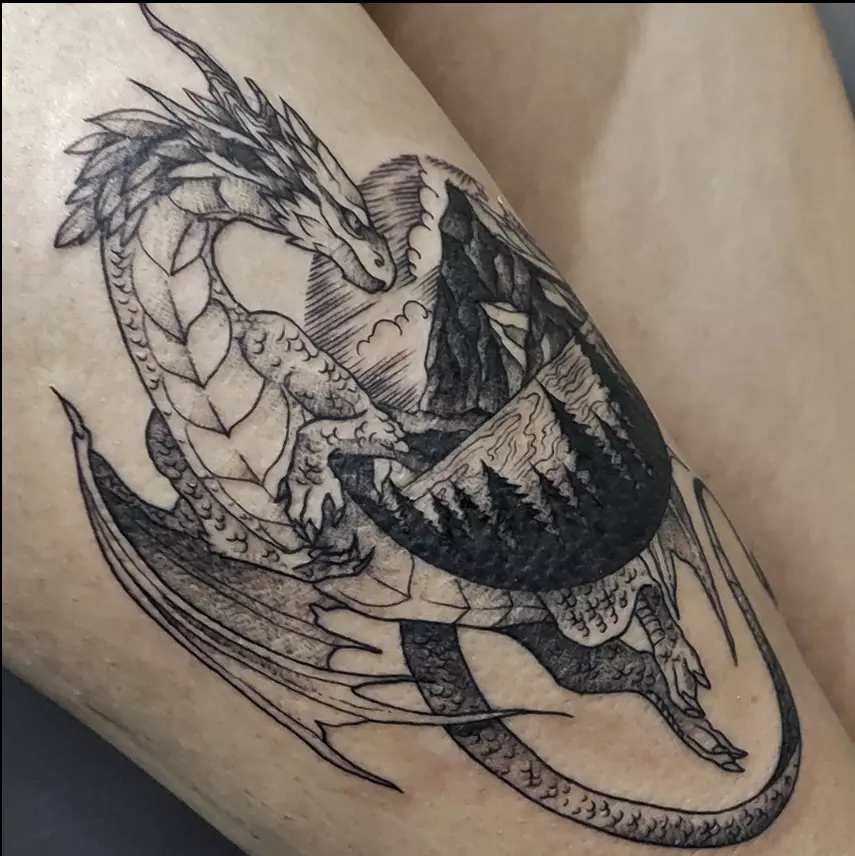
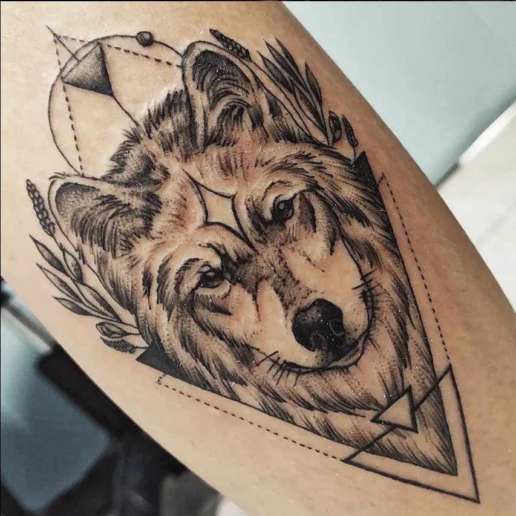
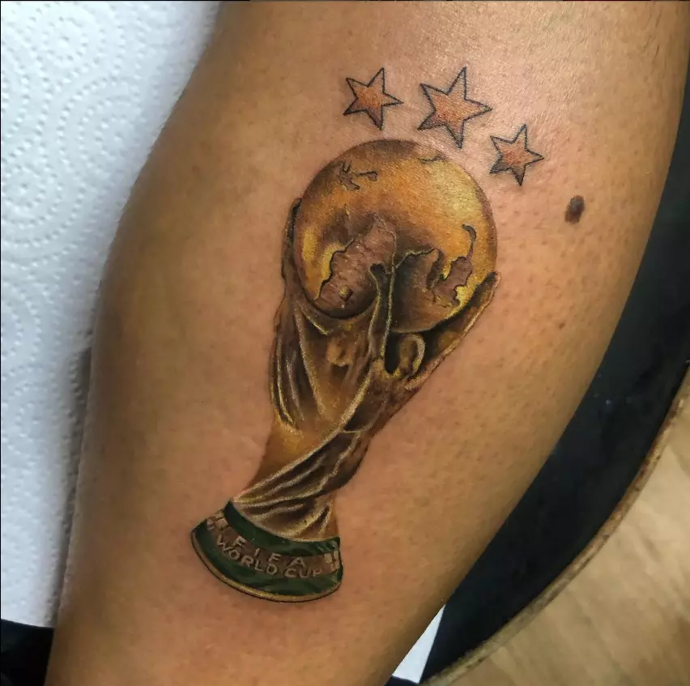
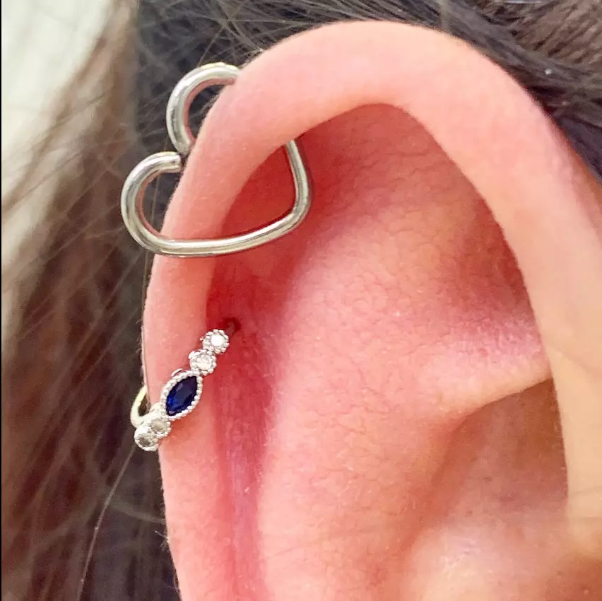
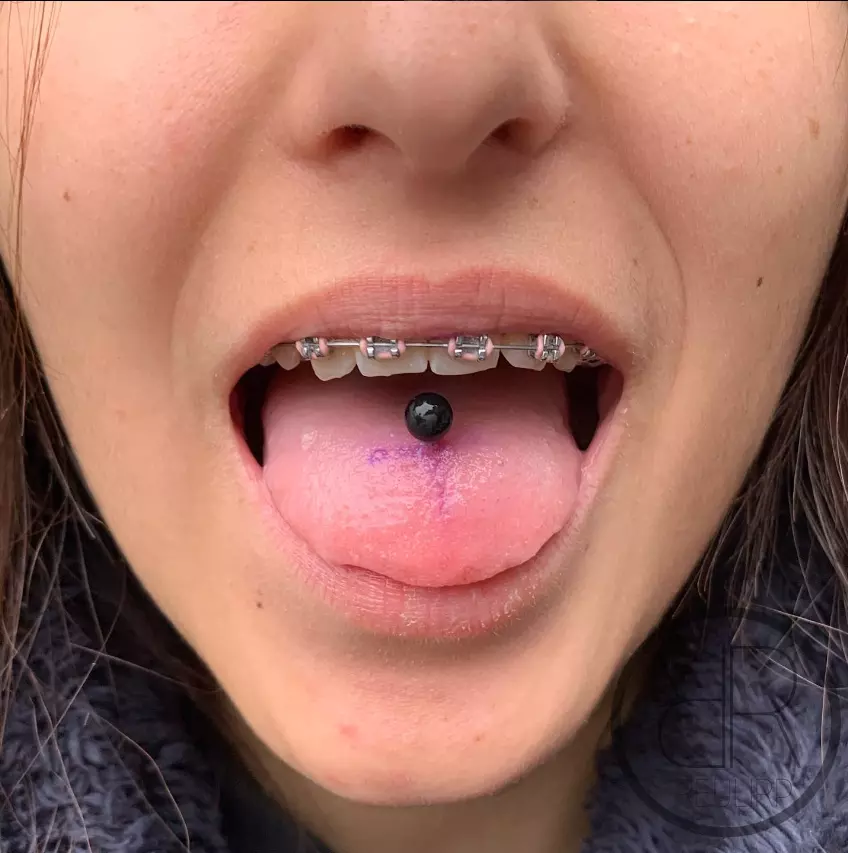
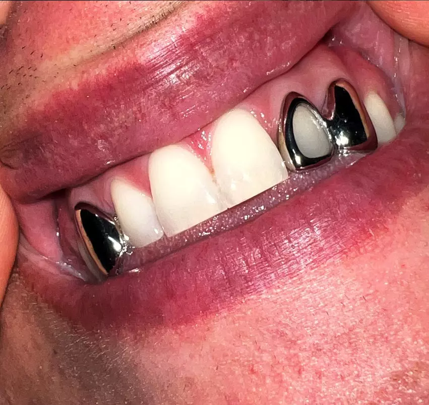
STAFF
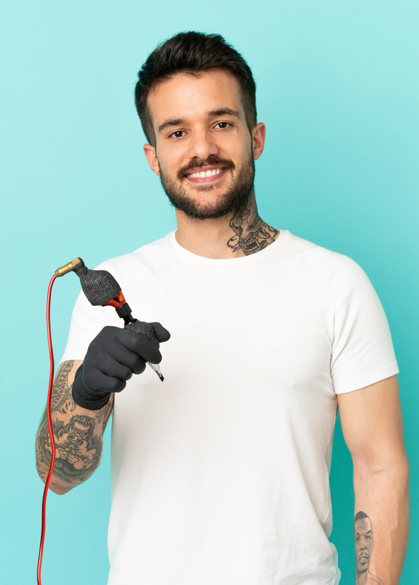
Mauricio Potes
Tatuador experto en la disciplina de tatuajes realistas, utiliza Figma para diseñar sus bocetos.
Lola Marenzi
Experta en tatuajes tradicionales y neotradicionales.
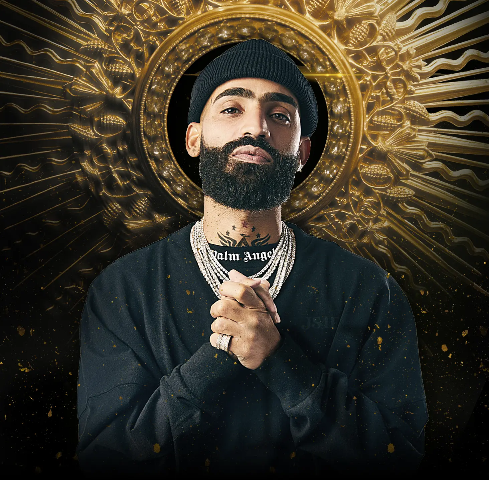
Leonardo DaVeccio
Experto en tatuajes del tipo caricaturas y perforaciones corporales.
Martin Demonchelo
Experto en body-modifications, prótesis y modificaciones extremas.
Gerson
Artista experto en “theet jewerly”, te deja los dientes como una joya, literalmente.
NUESTRA HISTORIA
En 1990, en una pequeña ciudad llena de arte y pasión, nació un estudio de tatuajes que
cambiaría la forma en que las personas ven y experimentan el arte corporal. "Massacre Tattoo Studio" fue
fundado por un grupo de entusiastas del arte corporal que buscaban desafiar las convenciones y elevar la
calidad y la creatividad en el mundo del tatuaje. Desde entonces, el estudio ha crecido y evolucionado, pero
siempre ha mantenido su espíritu original y su enfoque en la innovación.
Desde el principio, Massacre Tattoo Studio se ha enorgullecido de ofrecer una amplia variedad de servicios a
sus clientes. No solo se especializan en tatuajes de alta calidad y personalizados, sino que también ofrecen
servicios de piercing, borrado de tatuajes con láser y modificaciones corporales. Esta diversidad de
habilidades y técnicas les permite satisfacer las necesidades y deseos únicos de cada cliente que visita su
estudio.
A lo largo de los años, Massacre Tattoo Studio ha atraído a talentosos artistas del tatuaje y profesionales de
modificaciones corporales de todo el mundo. Estos artistas aportan una gran variedad de estilos y enfoques al
estudio, asegurando que siempre haya alguien disponible para crear el diseño perfecto para cada cliente. Ya
sea un tatuaje tradicional, un diseño tribal, o incluso una pieza de arte abstracto, Massacre Tattoo Studio
tiene a un artista que puede hacer realidad cualquier sueño.
Una parte fundamental de la filosofía de Massacre Tattoo Studio es la creencia en la importancia de la
educación y la innovación en la industria del tatuaje. Siempre están buscando nuevas técnicas y enfoques para
mejorar su trabajo y garantizar la seguridad y satisfacción de sus clientes. Por ejemplo, han sido pioneros en
la adopción de tecnologías de borrado de tatuajes con láser, lo que les permite ofrecer a sus clientes una
forma efectiva y segura de eliminar tatuajes no deseados o antiguos
El estudio también se ha hecho un nombre en el campo de las modificaciones corporales. Desde piercings simples
hasta implantes subdérmicos y bifurcación de la lengua, Massacre Tattoo Studio está siempre a la vanguardia de
las últimas tendencias y técnicas en el mundo de las modificaciones corporales. Su enfoque innovador y su
compromiso con la seguridad y la calidad han ayudado a establecerlos como líderes en la industria.
A medida que Massacre Tattoo Studio celebra más de tres décadas de éxito, sigue siendo un faro de creatividad
e innovación en el mundo del arte corporal. A través de su compromiso con la excelencia en el diseño y la
técnica, así como su dedicación a la satisfacción del cliente, han logrado dejar una marca indeleble en la
industria del tatuaje. No importa lo que el futuro les depare, Massacre Tattoo Studio continuará siendo un
lugar donde el arte, la pasión y la habilidad se unen para crear obras maestras en la piel.
RESERVÁ TU CITA
Contacto
Nuestra Ubicación
Calle M. A. Gorosito 75, Bella Vista (San Miguel) 1663 - Buenos Aires Agentina